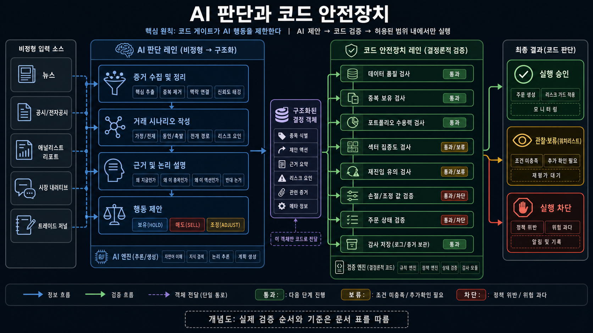

자동매매는 오늘의 실습 재료입니다. 진짜 목표는 다른 프로젝트에도 써먹을 수 있는 개발 습관입니다.
2
공통 실습 P4-00
파트3에서 적은 문장이 오늘의 개발 요청이 됩니다
내 전략에서 ___을 ___하게 바꾸고 싶다. 이유는 ___이다.
진입
어떤 종목을 볼까?
분석
AI가 무엇을 읽을까?
청산
언제 나올까?
리스크
얼마나 살까?
아직 코드를 고치지 않습니다. 먼저 이 문장이 어느 파일에 들어가는지 찾습니다.
3
공통 실습 P4-KIS · 읽기 전용 실제 데이터
KIS 실제 수급을 분석에 한 번 연결합니다
종목
005930
삼성전자 한 종목만 비교
환경
KIS real
가장 최근 영업일 기준
읽는 값
기관·외국인·개인
일별 순매수와 가격
바뀌는 곳
수급 섹션만
다른 분석은 그대로 유지
매매는 simulation · 주문·취소·정정·잔고·계좌 호출은 0회
KIS가 준비되지 않았다면 거래량 프록시로 합류합니다. 실패를 실제 데이터 성공처럼 말하지 않습니다.
4
공통 실습 P4-01 · 먼저 전체 길 보기
파일 이름을 외우기 전, 한 번 실행할 때 지나가는 길부터 봅니다
오늘 고칠 곳은 이 길 전체가 아닙니다. 내 아이디어가 처음 영향을 주는 파일 하나부터 찾습니다.
5
개발 기초 · 프로젝트 폴더를 처음 열었을 때
디렉터리는 파일을 숨기는 곳이 아니라, 역할을 찾는 지도입니다
6
개발 기초 · 실행 진입점
main.py는 ‘무엇을 어떤 순서로 할지’ 정하는 진행자입니다
왜 필요한가? 파일마다 실행 순서를 따로 기억하지 않아도, 한 곳에서 시작하면 같은 흐름으로 확인할 수 있습니다.
7
개발 기초 · 함수
함수는 “이 입력을 주면 이 결과를 돌려준다”는 작은 작업 약속입니다
async defrun_screening(
target_ticker=None, use_real=False
) -> list[str]:
# 후보 종목 코드 목록을 돌려줌
입력
target_ticker가 있으면 그 종목부터 봄 use_real이 참이면 실제 데이터 재확인
처리
조건에 맞는 후보만 고릅니다.
반환
list[str] = 종목 코드가 담긴 목록 예: ["005930", "000660"]
시그니처는 함수 이름·입력·반환값의 약속입니다. 후보 목록 대신 다른 모양을 돌려주면, 다음 단계인 main.py도 그 약속을 이해하지 못합니다.
8
개발 기초 · 파일이 이어지는 순간
코드는 다른 파일의 함수를 가져와, 받은 결과에 이름을 붙여 다음 단계로 넘깁니다
from screening importrun_screening# 1. screening.py의 함수를 main.py로 가져옴candidates = awaitrun_screening(...) # 2. 함수가 return한 후보 목록에 candidates라는 이름을 붙임for ticker incandidates: # 3. 목록의 종목을 하나씩 다음 단계에 전달
report = awaitrun_analysis_report(ticker)
9
개발 기초 · 코드와 설정을 구분하는 이유
“어떻게 움직일지”는 코드에, “오늘 어떤 환경에서 돌릴지”는 설정에 둡니다
코드는 버전 관리하지만, API 키·토큰·계좌번호 같은 비밀값은 .env에도 공유하지 않고 Git에 올리지 않습니다.
10
에이전트 원리 · 먼저 구분하기
에이전트는 역할·입력·출력이 정해진 AI 작업 단위입니다
11
에이전트 원리 · 이 프로젝트의 호출 한 번
도구 호출은 입력을 보내고, 결과를 확인하는 일입니다
중요한 점은 “AI가 알아서 했다”가 아닙니다. 무슨 근거를 보냈고, 어떤 형식의 결과만 받을지 코드가 정해 둡니다.
12
에이전트 원리 · 통신
에이전트는 결과에 이름표를 붙여 다음 단계에 넘깁니다
13
에이전트 원리 · 패턴을 고르는 기준
에이전트는 많이 붙일수록 좋은 것이 아니라, 일이 달라질 때만 역할을 나눕니다
패턴
언제 쓰나
이 프로젝트의 가까운 사례
순차 실행
앞 결과가 다음 입력일 때
main.py의 후보 → 보고서 → 매매
병렬 조사 후 편집
서로 다른 관점을 모을 때
여섯 분석가 → 편집 에이전트
라우터
요청 종류에 따라 길이 달라질 때
트랙 A/B/C/D 중 담당 파일 고르기
평가·수정 반복
수정 뒤 증거를 다시 볼 때
테스트·mock 실행·로그 확인
사람 승인
실제 변경 전 선택이 필요할 때
3분 뒤 로컬 예약을 등록하기 전
14
Strategy Harness Lite · 전략을 안전하게 코드로 옮기는 절차
하네스는 “내 전략을 바꿔줘”라는 말이 엉뚱한 수정으로 번지지 않게 막아 줍니다
15
공통 실습 P4-03 · 요청을 작업 명세로 바꾸기
좋은 프롬프트는 AI에게 잘 부탁하는 글이 아니라, 확인 가능한 작업 지시서입니다
[1 현재] 지금 screening.py는 거래량·시가총액·이동평균으로 후보를 고른다.
[2 결과] 거래량 기준을 바꾼 뒤 mock 후보 목록이 어떻게 달라지는지 보고 싶다.
[3 범위]VOLUME_SURGE_RATIO와 관련 필터만 검토한다.
[4 금지선]run_screening의 입력·list[str] 반환, simulation, 실주문 금지는 유지한다.
[5 확인] 수정 전후 후보 목록과 mock 전체 실행 로그를 비교한다.
[6 실패] 원하는 비교를 못 하면 수정하지 말고, 원인과 선택지를 보고한다.
여섯 줄이 있으면 수강생은 “무엇을 확인할지” 알고, 에이전트는 “어디까지 해도 되는지” 압니다.
16
요청을 좁히는 법
“알아서 고쳐줘”는 답이 아니라 질문을 돌려받을 요청입니다
막히는 요청
“매매를 더 잘하게 전체적으로 고쳐줘.”
무엇을, 어느 파일에서, 어떤 결과로 판단할지 빠져 있습니다.
[원하는 결과] 손절이 -5%에 먼저 작동하는지 확인하고 싶다.
[범위]trading.py의 _decide_exit만 검토한다.
[유지] holding·current_price 입력과 반환 형식은 바꾸지 않는다.
[증거] 손절·트레일링·목표가 세 사례와 mock 실행으로 확인한다.
파일 이름을 모르면 “먼저 실제 코드를 찾아 담당 파일과 선택지를 보여주고, 아직 수정하지 마”라고 말하면 됩니다.
17
조사 프롬프트 · 구현 전에 길 찾기
모를 때는 “고쳐줘”보다 “내가 판단할 재료를 찾아줘”라고 먼저 요청합니다
내가 바꾸고 싶은 것은 [예: 손절 기준]이야.
실제 코드를 읽고 담당 파일 · 함수 · 입력 · 반환 · 영향 범위를 표로 보여줘.
선택지는 세 개까지 제안하되, 아직 코드·설정·DB는 수정하거나 실행하지 마.
18
변경 금지선 · 이미 되는 것을 지키는 문장
바꿀 곳을 말한 뒤에는, 그대로여야 할 약속도 함께 적습니다
금지선은 AI를 의심해서만 쓰는 것이 아닙니다. 내가 바꾼 결과가 무엇 때문인지 알기 위해 범위를 좁히는 장치입니다.
19
검증 습관 · “완료했습니다” 다음에 볼 네 가지
AI의 완료 보고는 증거를 확인하는 출발점입니다
20
개인 실습 · 트랙 고르기
내 아이디어는 네 트랙 가운데 하나에서 시작합니다
트랙
내가 바꾸고 싶은 질문
실제로 먼저 읽을 파일과 확인할 결과
A · 진입
어떤 종목을 후보로 볼까?
screening.py · 수정 전후 후보 목록
B · 분석
AI가 어떤 관점으로 설명할까?
analysis_agents.py · 프롬프트 차이
C · 청산
언제 손실을 끊고 수익을 지킬까?
trading.py · _decide_exit · 세 청산 사례
D · 리스크
몇 종목에 얼마씩 나눌까?
trading.py 상수 · 수량과 통과 기준
트랙은 정답지가 아닙니다. 오늘 한 파일에서 확인 가능한 규칙 하나를 고르는 지도입니다.
21
공통 실습 P4-04
전략 전체가 아니라 오늘 확인할 규칙 하나를 고릅니다
내 문장 “거래량이 충분히 늘어난 종목만 보고 싶다.”
트랙 A · 진입
파일·규칙screening.py의 VOLUME_SURGE_RATIO 또는 관련 필터
예측·증거 같은 mock 데이터에서 후보 목록이 어떻게 달라지는지 비교
트랙 B는 실제 LLM이 연결돼야 문장 변화를 확인하기 쉽습니다. 기본 성공 경로는 A·C·D입니다.
22
선택 실습 P4-05~P4-08
에이전트에게 범위가 있는 변경을 맡깁니다
내 전략은 [한 줄]이다. [파일 하나]의 [규칙 하나]만 바꿔줘. [함수 약속·mock·simulation]은 유지해. 수정 전후를 [후보·설명·청산·수량]으로 비교하고 직접 실행해 확인해줘.
프롬프트 전문은 수강생 복붙 파일에서 자기 트랙 번호 하나만 사용합니다.
23
책임 분리
계산은 코드에 맡기고 맥락은 AI에게 맡깁니다
코드: 점수, 손익비, 수량, 손절 순서
LLM: 뉴스와 시장 맥락, 근거의 충돌, HOLD 의견
사람: 전략 방향, 허용 위험, 실제 운영 여부

AI 제안은 코드 안전장치가 허용한 범위 안에서만 실행됩니다.
24
25분 개인 실습
예측하고, 한 파일만 바꾸고, 직접 실행해 확인합니다
트랙 A · B · C · D 가운데 하나만 선택합니다
25
개인 실습 · 성공 증거
성공 기준은 코드가 많아진 것이 아니라 결과가 설명되는 것입니다
아직 부족한 보고
“수정 완료했습니다.”
수정 전후가 보이는 보고
“screening.py의 거래량 기준을 바꾸자 후보가 2개에서 3개로 늘었고, mock 전체 실행도 끝났습니다.”
내 전략 → 바꾼 파일과 규칙 → 내 실행에서 달라진 결과 → 확인한 증거
26
개발 기초 · 디버깅
디버깅은 원인을 좁히는 일입니다
1. 재현 같은 입력·같은 프로필에서 한 번 다시 실행
2. 관찰 로그의 처음 WARNING/ERROR와 바로 앞 단계 찾기
3. 가설 “입력이 비었나?”처럼 한 가지씩 코드로 확인
4. 최소 수정 원인이 확인된 파일의 해당 규칙만 수정
5. 회귀 확인 같은 재현 + API 키 없는 mock 전체 실행
“LLM 실패 → 규칙 보고서 폴백”은 실패 사실을 남긴 경고입니다. 마지막에 “파이프라인 완료”까지 갔다면, 바로 고쳐야 하는 오류와 구분합니다.
27
개발 기초 · 로그
로그는 프로그램이 남긴 작업 일지입니다
00:58:13 [INFO] main — [2/5] 분석 보고서 작성
00:58:13 [INFO] analysis — [005930] 데이터 원천: 모의 데이터(mock)
00:58:14 [WARNING] analysis_agents — 수급 분석가 실패 → 규칙 보고서 폴백
00:58:14 [INFO] main — 파이프라인 완료
읽는 순서: 시각 → 담당 모듈 → 단계 → 입력 상태 → 마지막 결과. 경고 한 줄만 보지 말고, 그 실행이 끝까지 갔는지 확인합니다.
28
공통 실습 P4-09
에러 한 줄보다 재현과 최소 수정을 함께 요청합니다
“이 오류를 같은 조건에서 한 번 재현해줘. 로그에서 처음 실패한 위치와 입력을 찾고, 원인 가설을 하나씩 확인해. 원인이 확인되면 관련 파일만 최소 수정하고, 같은 재현과 기본 mock 전체 실행으로 다시 검증해줘.”
피할 요청
“에러 나니까 전부 다시 설치해줘.”
좋은 요청
“범위를 넓히지 말고 처음 깨진 원인을 찾아줘.”
29
오류와 폴백 · 무엇이 실제로 사용됐는지 남겨야 합니다
폴백은 실패를 감추는 기능이 아니라, 외부 연결이 막혀도 연습을 이어 가는 안전장치입니다
30
개발 기초 · DB와 테이블
DB와 테이블은 실행 결과를 다시 꺼내 쓰는 곳입니다
테이블은 같은 종류의 기록을 행과 열로 모은 표입니다. 오늘은 SQL을 외우지 않고, 코딩 에이전트에게 최근 행을 읽기 전용으로 보여 달라고 합니다.
31
공통 실습 P4-10 · 저장과 화면이 이어지는 길
대시보드의 숫자는 앞 단계가 남긴 DB 기록을 읽은 결과입니다
32
로컬 운영 실습
이제 3분 뒤에 프로그램이 스스로 시작되게 만듭니다
mock·simulation 한 번 실행 → 로그와 DB 확인 → 임시 예약 삭제
33
개발 기초 · 배치와 스케줄러
배치는 할 일이고, 스케줄러는 시작 시각을 정합니다
한 번 실행
지금 시작
사람이나 에이전트가 main.py를 실행합니다.
배치
정해진 일
후보→분석→매매→기록을 한 묶음으로 처리합니다.
스케줄러
언제 시작
3분 뒤, 매일 오전·오후처럼 실행 시각을 정합니다.
main.py가 24시간 떠 있는 것이 아니라, 예약된 시각마다 새로 시작됩니다.
34
개발 기초 · 로컬과 서버
로컬과 서버는 실행 장소가 다릅니다
로컬 · 내 컴퓨터
바로 고치고 확인하기 쉽습니다. 컴퓨터가 꺼지거나 잠들면 예약이 실행되지 않을 수 있습니다.
서버 · 계속 켜 둔 컴퓨터
정해진 시간에 안정적으로 실행하기 좋습니다. 비용·보안·배포·모니터링이 추가로 필요합니다.
오늘은 서버에 배포하지 않습니다. 내 컴퓨터에서 예약 실행의 원리를 직접 확인합니다.
35
공통 실습 P4-11 · 설계
예약을 만들기 전에 무엇이 바뀌는지 먼저 확인합니다
시간
현재 시각 + 3분
실행
절대 경로의 Python과 main.py
안전
mock·simulation
증거
로그 파일과 DB 새 기록
“변경 목록과 중지·삭제 방법을 먼저 보여줘. 내가 승인하기 전에는 예약을 등록하지 마.”
36
공통 실습 P4-12 · 승인 후 실행
3분 뒤 로그와 DB에서 실제 실행을 확인합니다
예약 직후
등록 확인
실행 시각과 명령, 로그 위치를 확인합니다.
3분 뒤
로그 확인
다섯 단계 완료와 mock·simulation을 찾습니다.
실행 뒤
DB 확인
가장 최근 기록의 시각이 새로 생겼는지 봅니다.
예약이 안 돌았다면 바로 다시 만들지 않습니다. 컴퓨터 절전, 경로, 권한, 로그부터 확인합니다.
37
공통 실습 P4-13 · 정리
실습 예약은 삭제하고, 원하는 반복 주기는 설계로 남깁니다
수업에서 실제로 할 것
3분 뒤 1회 예약 로그·DB 확인 임시 예약 삭제
수업 뒤에 설계할 것
오전·오후 실행 시각 휴장일과 시간대 중복 실행 방지와 알림
삭제 뒤 예약 목록을 다시 확인해 임시 작업이 남지 않았다는 증거를 봅니다.
38
마무리 · 실전 운영 팁
다음 개발도 같은 다섯 문장으로 시작합니다
1
원한 변화
무엇을 왜 바꾸려 했는가
2
작업 범위
무엇만 바꾸고 무엇은 지켰는가
3
수정 내용
어느 파일의 어떤 규칙을 바꿨는가
4
확인 증거
코드·테스트·로그·DB에서 무엇을 봤는가
5
다음 한 가지
다음에는 무엇을 더 검증할 것인가
작업이 길어지면 이 내용을 handoff에 남깁니다. API 키·계좌·로그인 정보는 기록하지 않습니다.